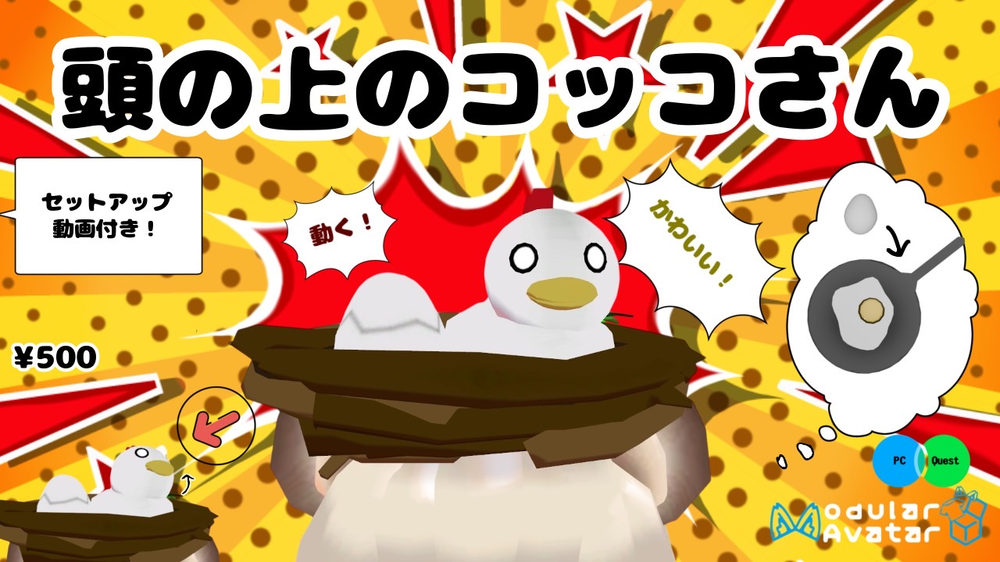

活動内容
TERU はマルチクリエイターであり
3Dモデリング、音楽などをメインでやってます
依頼はX(旧Twitter)のDMまたはメールでお願いします！
TERUについて
TERUのバックグラウンドやどういった活動をしているかを知れるページです
TERUがどんな人か
使っているソフトウェア：Blender, Unity, Unreal Engine, Cubase
ニューヨーク生まれ育ちの純日本人であり、英語と日本語どちらも流暢に喋れます。
幼い頃から日本の創作物に触れて育ったため、日本のアニメやゲーム文化が大好きです。
TERUの目標
「マルチクリエイター」を目指しており、音楽、シナリオ製作、イラスト、3Dモデリング、プログラミングなどといった幅広い分野で自身の作るエンタメを色んな人に届けたいと思っている。
TERUの実績
----------------------------------------------------------------------------------------
・音楽：
-学生時代に吹奏楽部、ジャズバンド（ビッグバンド）、クラシックギターでの合計5年の経験
-VRChatゲームワールド「カッコウの巣立ち」の音を全て一人で製作
----------------------------------------------------------------------------------------
・プログラミング：
-VRChatワールドを作る際のUdon#といった制限されたC#言語でのゲーム製作を成し遂げた
-このウェブサイトを製作
----------------------------------------------------------------------------------------
・3Dモデリング：
-キャラクター製作経験あり
-VRChatゲームワールド「カッコウの巣立ち」の3Dモデルを一人で製作
----------------------------------------------------------------------------------------

BOOTHで売っている商品例です